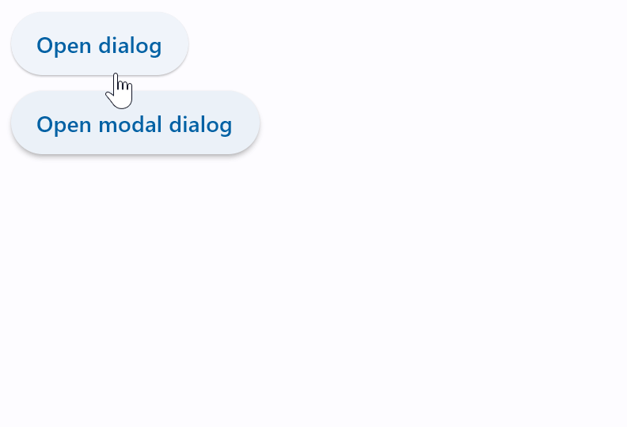
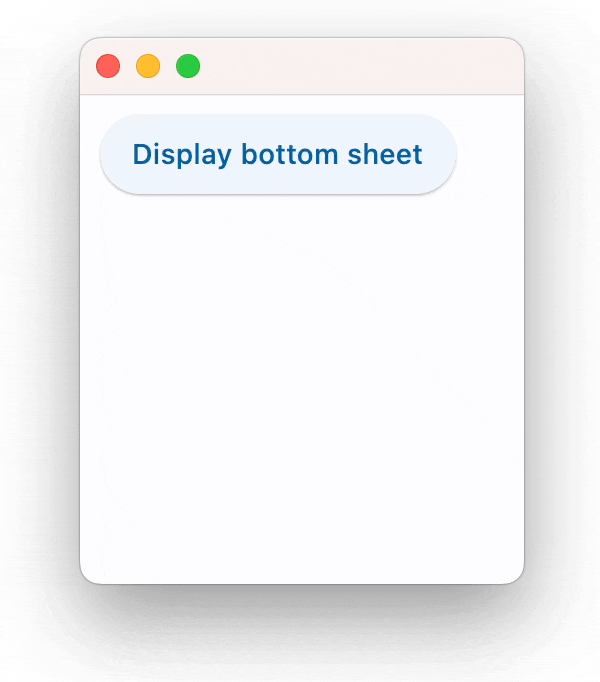
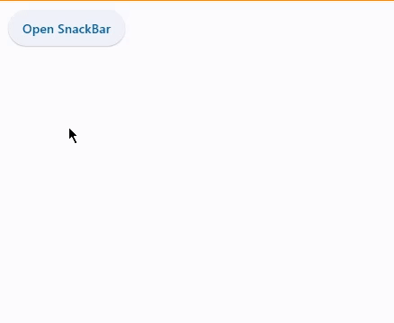

5 - Diàlegs, alertes i panells
Diàlegs, alertes i panells
AlertDialog
És un control per informar l'usuari sobre situacions que requereixen la seua atenció o intervenció. Té un títol opcional i una llista d'accions, opcional també. El títol es mostra dalt del contingut i les accions es mostren baix del contingut.
Exemple
| Python |
|---|
| import flet as ft
def main(page: ft.Page):
page.title = "AlertDialog examples"
dlg = ft.AlertDialog(
title=ft.Text("Hello, you!"), on_dismiss=lambda e: print("Dialog dismissed!")
)
def close_dlg(e):
dlg_modal.open = False
page.update()
dlg_modal = ft.AlertDialog(
modal=True,
title=ft.Text("Please confirm"),
content=ft.Text("Do you really want to delete all those files?"),
actions=[
ft.TextButton("Yes", on_click=close_dlg),
ft.TextButton("No", on_click=close_dlg),
],
actions_alignment=ft.MainAxisAlignment.END,
on_dismiss=lambda e: print("Modal dialog dismissed!"),
)
def open_dlg(e):
page.dialog = dlg
dlg.open = True
page.update()
def open_dlg_modal(e):
page.dialog = dlg_modal
dlg_modal.open = True
page.update()
page.add(
ft.ElevatedButton("Open dialog", on_click=open_dlg),
ft.ElevatedButton("Open modal dialog", on_click=open_dlg_modal),
)
ft.app(target=main)
|

Control Modal vs No modal
Finestra Modal:
- Una finestra modal és una finestra que bloqueja la interacció amb la resta de la interfície de l'aplicació mentre està oberta.
- Les finestres modals són útils quan es requereix l'atenció immediata de l'usuari o quan és necessari obtenir informació crítica abans de continuar.
Finestra No Modal:
- Una finestra no modal, d'altra banda, no bloqueja la interacció amb la resta de la interfície.
Banner
Un bàner mostra un missatge que requereix una acció de l'usuari. El missatge és important i concís, i ofereix accions als usuaris per acceptar (o descartar el bàner). Es mostren a la part superior de la pantalla. Són persistents i no modals, permetent a l'usuari ignorar-los o interactuar amb ells en qualsevol moment.
Exemple
| Python |
|---|
| import flet as ft
def main(page):
def close_banner(e):
page.banner.open = False
page.update()
page.banner = ft.Banner(
bgcolor=ft.colors.AMBER_100,
leading=ft.Icon(ft.icons.WARNING_AMBER_ROUNDED, color=ft.colors.AMBER, size=40),
content=ft.Text(
"Oops, there were some errors while trying to delete the file. What would you like me to do?"
),
actions=[
ft.TextButton("Retry", on_click=close_banner),
ft.TextButton("Ignore", on_click=close_banner),
ft.TextButton("Cancel", on_click=close_banner),
],
)
def show_banner_click(e):
page.banner.open = True
page.update()
page.add(ft.ElevatedButton("Show Banner", on_click=show_banner_click))
ft.app(target=main)
|

BottomSheet
Un BottomSheet és una alternativa modal a un menú o un diàleg.
Exemple
| Python |
|---|
| import flet as ft
def main(page: ft.Page):
def bs_dismissed(e):
print("Dismissed!")
def show_bs(e):
bs.open = True
bs.update()
def close_bs(e):
bs.open = False
bs.update()
bs = ft.BottomSheet(
ft.Container(
ft.Column(
[
ft.Text("This is sheet's content!"),
ft.ElevatedButton("Close bottom sheet", on_click=close_bs),
],
tight=True,
),
padding=10,
),
open=True,
on_dismiss=bs_dismissed,
)
page.overlay.append(bs)
page.add(ft.ElevatedButton("Display bottom sheet", on_click=show_bs))
ft.app(target=main)
|

SnackBar
Un missatge lleuger amb una acció opcional que es mostra breument a la part inferior de la pantalla.
Exemple
| Python |
|---|
| import flet as ft
class Data:
def __init__(self) -> None:
self.counter = 0
d = Data()
def main(page):
def on_click(e):
page.snack_bar = ft.SnackBar(ft.Text(f"Hello {d.counter}"))
page.snack_bar.open = True
d.counter += 1
page.update()
page.add(ft.ElevatedButton("Open SnackBar", on_click=on_click))
ft.app(target=main)
|
